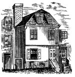

|
by Stefan Bielinski Although Robert Yates was baptized in the Schenectady Dutch church in 1738, his family roots were in Albany. He was the eldest of the twelve children of Albany-born Schenectady merchant Joseph Yates and Maria Dunbar - the daughter of a garrison soldier who became a Schenectady vintner. Early on, he learned the craft of the surveyor and then began to train for a career in law. After clerking for William Livingston in New York City, in 1760 he was licensed to practice on his own. In 1765, he married Jannetje Van Ness and settled in Albany. Their first home was on the hillside in the Second Ward where he had inherited property from his grandfather and namesake - Robert Yates of Schenectady. Their six children were baptized at the Albany Dutch Church between 1767 and 1783 where both parents would become lifetime members. Surveying supplemented an insurgent attorney's income as he made a number of important land maps during the 1760s. He drew the first civilian map of Albany in 1770. He also relied on patronage from the Albany Corporation through his uncle, alderman Abraham Yates, Jr. In 1771, he was elected to the Common Council as an alderman for the second ward. In those years he served on a number of committees, provided legal advice, and stepped forward to compile and issue the first published version of the Laws and Ordinances of the City of Albany in 1773. Enjoying a growing legal practice and gaining repute as an attorney, Robert Yates prospered.
From the beginning of the struggle for American liberties he stood in the front ranks of Albany's Patriot leaders. Although he did not sign the Albany Sons of Liberty constitution of 1766, he was prominent in the local resistance to the Stamp Act. By 1774, he had joined the Albany Committee of Correspondence and stood among its first members when the committee's activities became public in 1775. At that time, he was still a member of the Albany common council - although its activities were being replaced by the extralegal Committee of Correspondence, Safety, and Protection. He represented the second ward on the committee and was in close contact with it from his subsequent offices until it ceased operations in 1778. At the same time, he also served as secretary of the Board of Indian Commissioners - a post that required him to travel to the frontier. Robert Yates was an exceptional Albany resident called to service beyond the local level. Beginning in the spring of 1775, he was elected to represent Albany in each of the four New York Provincial Congresses. The first three met in New York while the last one, convened after the Declaration of Independence, met under duress in locations throughout the Hudson Valley. In 1776-77, he served on the committee that drafted the first New York State Constitution and also was a member of the "Secret Committee for Obstructing Navigation of the Hudson." In October 1777, Yates was appointed to the New York State Supreme Court. Through the darkest days of the struggle, Yates traveled the state - sitting on the court and otherwise aiding the American cause. Although he often was away from Albany, his family continued to grow as two sons were born during the war years. With the end of the war, Robert Yates's family settled into a new home on upper State Street. Although principally an associate justice of the state Supreme Court, Yates maintained a modest legal practice and continued surveying as well. During the 1780s, his political star continued to rise in the "party" of Governor George Clinton as he spoke in opposition to the expansion of the scope of a national government. In 1787, he was appointed with John Lansing, Jr. and Alexander Hamilton to represent New York at the Philadelphia convention to revise the Articles of Confederation. Arriving in Philadelphia, Yates and Lansing felt the mood of the convention to produce an entirely new form of government was beyond their authority. After sending a letter to Governor Clinton urging opposition to the new Constitution, they returned home. Yates is thought to have written a number of published essays in opposition to its adoption. His personal notes from the Philadelphia convention were published in 1821. In 1788, Robert Yates was elected as an antifederalist delegate to the New York State ratifying convention and worked against adoption of the Constitution. But, after its acceptance, he pledged his support as a matter of patriotic duty. In 1789, he ran for governor against George Clinton with the support of the New York Federalists - who viewed him as a reasonable, potentially kindred spirit who was not from a wealthy family. He was defeated by Governor Clinton. Approached by the Federalists again in 1792, Yates refused to run citing the financial drain caused by past politicking. In the gubernatorial campaign of 1795, considerable sentiment existed for Yates's candidacy as he was firmly established in the center of the former antifederal party. John Jay defeated him in a close election ending Yates's political career. By then, he already had devoted himself to the law. In September 1790, Robert Yates was chosen Chief Justice of the New York State Supreme Court. He served until the mandatory retirement age of sixty in 1798. Unlike many "new men of the Revolution," he did not attain great wealth and retired to his middling Albany home. Revolutionary leader, Robert Yates enjoyed a distinguished career in the law and in public service. Enjoying great stature during his lifetime, he was widely regarded as the most moderate of the Antifederalists. He died in 1801 at the age of sixty three. His widow died in 1818. Their son, jurist John Van Ness Yates, succeeded to Robert Yates's legal practice and lived in the State Street home. Autograph of Robert Yates as reproduced in the Johnson Papers. Information on Yates's clerkship comes from Alfred F. Young, The Democratic Republicans of New York: The Origins, 1763-1797 (Chapel Hill, 1967). Young's seminal study is also the source of the best insights on Robert Yates and his career. Yates drew a number of maps in newly formed Tryon County. In 1773, he surveyed the Westenhook Patent and later, with John R. Bleecker, the city's lands at Schaghticoke. His 1770 map of Albany was submitted along with a written report on the city's boundary lines. In 1786, he was appointed to the commission that finally fixed the boundary between New York and Massachusetts. The Yates house at 110 State Street stood until 1855. His observations published under the title Secret Proceedings and Debates of the Convention Assembled . . . for the Purpose of Forming the Constitution of the United States provide important insights on the process that led to the development of the constitution. This exciting period (1795) in Yates's political life is more fully covered in Young, The Democratic Republicans, pp. 429-42.
first opened 3/30/05; updated 9/22/16 |